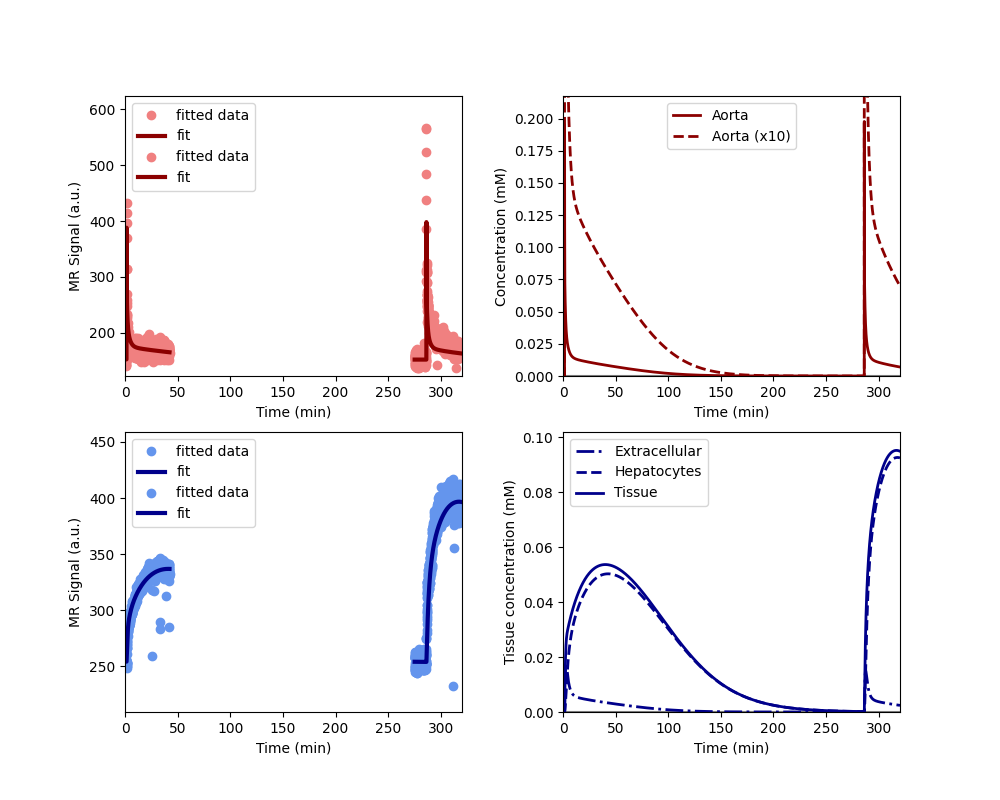
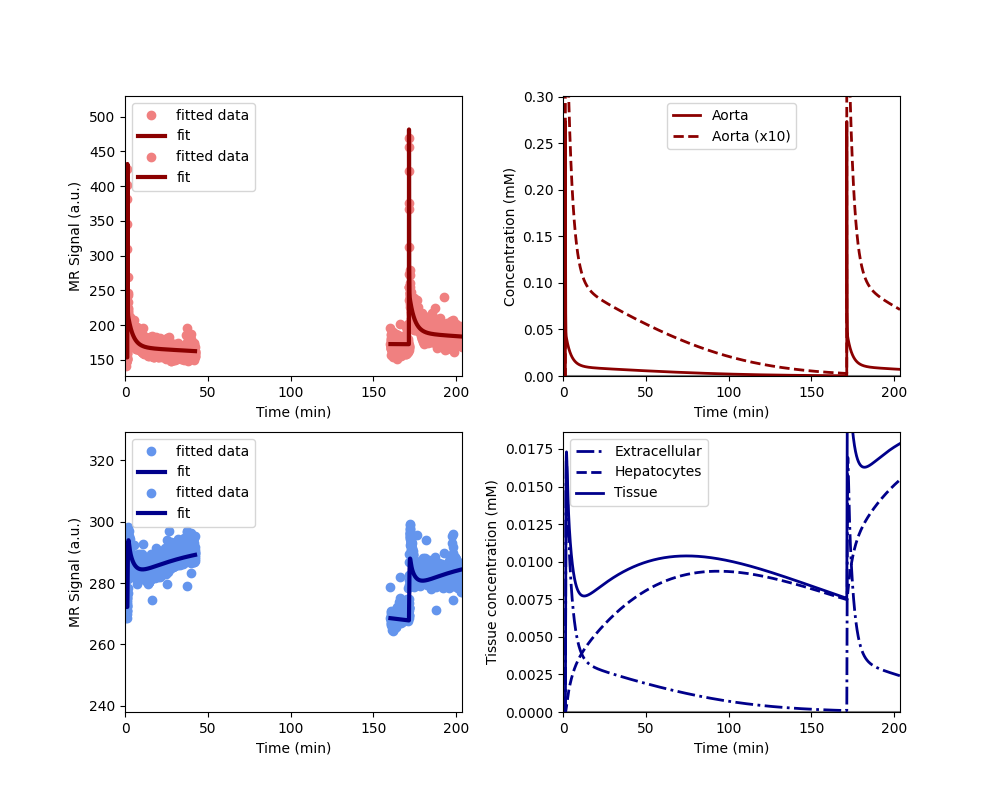

Note
Go to the end to download the full example code.
Aorta and Liver in two scans#
These example shows the use of the AortaLiverSplit model to
simultaneously fit signals measured in aorta and liver over two
different scans on the same day.
import numpy as np
import dcmri as dc
Model setup#
Since we are using data from the TRISTAN healthy volunteer study with rifampicin, we’ll configure the model with the following options:
model = dc.InverseAortaLiverSplit(
heartlung='pfcomp', # Smoother first pass data
organs='2cxm', # Long acquisition times reveal extravasation
liver='1I-IC', # Intracellular agent
non_stationary='U', # Uptake rate changes during the course of the experiment
baseline='measured', # Data are available on precontrast T1
sequence='ZTE-3D-SPGR-SS', # Echo times are assumed to be zero
t2s_relaxation_ao=None, # No T2* relaxation with TE=0
t2s_relaxation_li=None, # No T2* relaxation with TE=0
calibrate=True, # Derive signal scaling factor from data
trigger=True, # Signals are retrospectively triggered
bolus='dual', # Two independent injections performed
estimate_bat='custom', # Use the dedicated BAT estimator
)
Let’s see what input parameters are needed for this model:
+----------------------------------------------------------------------------------------------------------------------------------------------------------------------------+
| InverseAortaLiverSplit instance - inputs (n = 60) |
+----------------+------------+----------+-------------------------------------------------------------+-----------------+---------------+-----------------------+-----------+
| Key | Value | Unit | Name | Group | Bounds | DICOM | OSIPI |
+----------------+------------+----------+-------------------------------------------------------------+-----------------+---------------+-----------------------+-----------+
| B1corr_1_ao | 1 | | 1st B1-correction factor in the aorta | electromagnetic | (0, 5) | | |
| B1corr_1_li | 1 | | 1st B1-correction factor in the liver | electromagnetic | (0, 5) | | |
| B1corr_2_ao | 1 | | 2nd B1-correction factor in the aorta | electromagnetic | (0, 5) | | |
| B1corr_2_li | 1 | | 2nd B1-correction factor in the liver | electromagnetic | (0, 5) | | |
| me | 1 | A cm2/mL | equilibrium magnetization | electromagnetic | (0, 5) | | |
| R1_b | 0.65 | Hz | tissue R1 in the blood | electromagnetic | (0, 5) | | Q.EL1.001 |
| R1_li | 0.65 | Hz | tissue R1 in the liver | electromagnetic | (0, 5) | | Q.EL1.001 |
+----------------+------------+----------+-------------------------------------------------------------+-----------------+---------------+-----------------------+-----------+
| dose_tolerance | 0.1 | | dose tolerance | hyperparameters | | | |
| dt | 0.5 | sec | pseudo-continuous time step | hyperparameters | | | |
+----------------+------------+----------+-------------------------------------------------------------+-----------------+---------------+-----------------------+-----------+
| agent | gadoterate | | contrast agent generic name | indicator | | | |
| dose_1 | 0.1 | mL/kg | 1st contrast agent dose | indicator | (0, 0.2) | | |
| dose_2 | 0.1 | mL/kg | 2nd contrast agent dose | indicator | (0, 0.2) | | |
| rate_1 | 1 | mL/sec | 1st injection rate | indicator | (0, 10) | | |
| rate_2 | 1 | mL/sec | 2nd injection rate | indicator | (0, 10) | | |
+----------------+------------+----------+-------------------------------------------------------------+-----------------+---------------+-----------------------+-----------+
| pfree | None | a.u. | set of free parameters | inverse problem | | | |
+----------------+------------+----------+-------------------------------------------------------------+-----------------+---------------+-----------------------+-----------+
| CO | 100 | mL/sec | cardiac output | physiological | (0, 500) | | |
| D_hl | 0.2 | | transit time dispersion in the heart and Lungs | physiological | (0.01, 0.99) | | |
| E_ki | 0.15 | | extraction fraction in the kidney | physiological | (0, 1) | | Q.PH1.005 |
| E_or | 0.15 | | extraction fraction in the organs | physiological | (0, 0.5) | | Q.PH1.005 |
| Ef_li | 0.1 | | final extraction fraction in the liver | physiological | (0.0, 1.0) | | |
| Ei_li | 0.1 | | initial extraction fraction in the liver | physiological | (0.0, 1.0) | | |
| fCO_li | 0.1 | | fraction of the cardiac output in the liver | physiological | (0, 0.5) | | |
| H | 0.45 | | hematocrit | physiological | (0, 1) | | Q.PH1.012 |
| T_b_or | 20 | sec | mean transit time in blood of the organs | physiological | (0, 60) | | Q.PH1.006 |
| T_e_or | 120 | sec | mean transit time in extracellular space of the organs | physiological | (0, 800) | | Q.PH1.006 |
| T_h | 14400 | sec | mean transit time in hepatocytes | physiological | (600, 21600) | | Q.PH1.006 |
| T_hl | 10 | sec | mean transit time in the heart and Lungs | physiological | (0, 30) | | Q.PH1.006 |
| T_lag | 30 | sec | mean transit time in the liver artery and gut | physiological | (0.0, 60) | | Q.PH1.006 |
| v_e_li | 0.25 | mL/cm3 | volume fraction in extracellular space of the liver | physiological | (0.01, 0.5) | | Q.PH1.001 |
| v_li | 1 | mL/cm3 | volume fraction in the liver | physiological | (0, 1) | | Q.PH1.001 |
+----------------+------------+----------+-------------------------------------------------------------+-----------------+---------------+-----------------------+-----------+
| FA_1 | 15 | deg | 1st flip angle | sequence | (0, 180) | FlipAngle | Q.MS1.007 |
| FA_2 | 15 | deg | 2nd flip angle | sequence | (0, 180) | FlipAngle | Q.MS1.007 |
| field_strength | 3 | T | magnetic field strength | sequence | (0, 20) | MagneticFieldStrength | |
| Nk0_1 | 64 | | 1st number of acquired phase lines to the center of k-space | sequence | (0, 1000) | | Q.MS1.011 |
| Nk0_2 | 64 | | 2nd number of acquired phase lines to the center of k-space | sequence | (0, 1000) | | Q.MS1.011 |
| Nph_1 | 128 | | 1st number of acquired phase lines in k-space | sequence | (0, 1000) | | Q.MS1.012 |
| Nph_2 | 128 | | 2nd number of acquired phase lines in k-space | sequence | (0, 1000) | | Q.MS1.012 |
| TR_1 | 0.005 | sec | 1st repetition time | sequence | (0, 1) | RepetitionTime | Q.MS1.006 |
| TR_2 | 0.005 | sec | 2nd repetition time | sequence | (0, 1) | RepetitionTime | Q.MS1.006 |
+----------------+------------+----------+-------------------------------------------------------------+-----------------+---------------+-----------------------+-----------+
| iStrig_1_ao | None | | 1st indices of the signal trigger in the aorta | signal | | | |
| iStrig_1_li | None | | 1st indices of the signal trigger in the liver | signal | | | |
| iStrig_2_ao | None | | 2nd indices of the signal trigger in the aorta | signal | | | |
| iStrig_2_li | None | | 2nd indices of the signal trigger in the liver | signal | | | |
| nb_1 | 1 | a.u. | 1st number of baseline time points | signal | | | |
| nb_2 | 1 | a.u. | 2nd number of baseline time points | signal | | | |
| NSR_1_ao | 0.0 | | 1st noise-to-signal ratio in the aorta | signal | (0, 100000.0) | | |
| NSR_1_li | 0.0 | | 1st noise-to-signal ratio in the liver | signal | (0, 100000.0) | | |
| NSR_2_ao | 0.0 | | 2nd noise-to-signal ratio in the aorta | signal | (0, 100000.0) | | |
| NSR_2_li | 0.0 | | 2nd noise-to-signal ratio in the liver | signal | (0, 100000.0) | | |
| S_1_ao | 1.0 | a.u. | 1st signal in the aorta | signal | (0, 5) | | Q.MS1.001 |
| S_1_li | 1.0 | a.u. | 1st signal in the liver | signal | (0, 5) | | Q.MS1.001 |
| S_2_ao | 1.0 | a.u. | 2nd signal in the aorta | signal | (0, 5) | | Q.MS1.001 |
| S_2_li | 1.0 | a.u. | 2nd signal in the liver | signal | (0, 5) | | Q.MS1.001 |
| tS_1_ao | 0.0 | sec | 1st signal time points in the aorta | signal | | | |
| tS_1_li | 0.0 | sec | 1st signal time points in the liver | signal | | | |
| tS_2_ao | 0.0 | sec | 2nd signal time points in the aorta | signal | | | |
| tS_2_li | 0.0 | sec | 2nd signal time points in the liver | signal | | | |
+----------------+------------+----------+-------------------------------------------------------------+-----------------+---------------+-----------------------+-----------+
| vol_ao | 1 | cm3 | ROI volume in the aorta | whole-body | (0.0, 1000) | | |
| vol_li | 1000 | cm3 | ROI volume in the liver | whole-body | (0, 10000) | | |
| weight | 70 | kg | body weight | whole-body | (0, 300) | PatientWeight | |
+----------------------------------------------------------------------------------------------------------------------------------------------------------------------------+
Fitting the model#
# --- Source data identifier
study = 'tristan_humans_healthy_rifampicin'
# --- Format the data
visit_1_data = dc.load_tristan_humans(study, 'LDS-002', visits=['control'])
visit_2_data = dc.load_tristan_humans(study, 'LDS-002', visits=['drug'])
# --- Fit the model
visit_1_result = model(visit_1_data, verbose=2)
visit_2_result = model(visit_2_data, verbose=2)
Iteration Total nfev Cost Cost reduction Step norm Optimality
0 1 3.0235e+03 2.11e+04
1 2 1.7212e+03 1.30e+03 5.75e-01 1.58e+04
2 3 1.6616e+03 5.96e+01 3.65e-01 1.50e+04
3 4 1.1728e+03 4.89e+02 1.05e-01 6.16e+03
4 5 8.9279e+02 2.80e+02 1.11e-01 6.00e+03
5 6 7.4311e+02 1.50e+02 2.05e-01 8.38e+02
6 8 7.2454e+02 1.86e+01 6.79e-02 8.27e+02
7 9 6.9700e+02 2.75e+01 1.24e-01 9.44e+02
8 12 6.9411e+02 2.89e+00 1.95e-02 4.71e+02
9 13 6.9069e+02 3.42e+00 1.32e-02 2.43e+01
10 14 6.8899e+02 1.70e+00 2.81e-02 2.55e+02
11 15 6.8640e+02 2.60e+00 2.60e-02 1.37e+02
12 17 6.8501e+02 1.39e+00 1.39e-02 3.80e+01
13 21 6.8496e+02 4.83e-02 5.36e-04 2.28e+01
14 23 6.8494e+02 1.75e-02 2.63e-04 3.87e+01
15 26 6.8494e+02 2.71e-04 3.23e-05 2.15e+01
16 27 6.8494e+02 5.89e-04 8.29e-06 2.14e+01
17 28 6.8494e+02 1.18e-03 1.66e-05 2.13e+01
18 32 6.8494e+02 3.67e-05 5.18e-07 2.12e+01
19 34 6.8494e+02 1.83e-05 2.59e-07 2.12e+01
20 36 6.8494e+02 2.09e-06 1.29e-07 3.81e+01
21 37 6.8494e+02 3.87e-06 3.15e-08 3.81e+01
`ftol` termination condition is satisfied.
Function evaluations 37, initial cost 3.0235e+03, final cost 6.8494e+02, first-order optimality 3.81e+01.
Iteration Total nfev Cost Cost reduction Step norm Optimality
0 1 4.6621e+04 4.59e+05
1 2 6.9110e+03 3.97e+04 2.18e-01 4.91e+04
2 3 2.0541e+03 4.86e+03 2.39e-01 5.66e+03
3 4 1.4801e+03 5.74e+02 3.24e-01 1.68e+03
4 6 1.1670e+03 3.13e+02 8.80e-02 4.10e+03
5 7 9.4112e+02 2.26e+02 1.39e-01 6.01e+03
6 8 7.8846e+02 1.53e+02 2.39e-01 6.79e+02
7 9 7.3355e+02 5.49e+01 2.24e-01 3.61e+03
8 10 5.8236e+02 1.51e+02 2.12e-01 5.31e+02
9 13 5.7886e+02 3.49e+00 1.73e-02 1.29e+03
10 15 5.7536e+02 3.50e+00 1.07e-02 3.30e+02
11 16 5.7371e+02 1.65e+00 2.20e-02 1.31e+03
12 17 5.7182e+02 1.89e+00 4.38e-02 1.40e+03
13 18 5.7096e+02 8.57e-01 8.73e-02 7.67e+03
14 20 5.6828e+02 2.68e+00 2.03e-02 1.49e+02
15 21 5.6750e+02 7.83e-01 3.46e-02 3.69e+02
16 22 5.6699e+02 5.12e-01 5.64e-02 1.85e+02
17 23 5.6682e+02 1.64e-01 4.10e-02 1.45e+02
18 27 5.6679e+02 3.32e-02 1.06e-03 2.92e+00
19 30 5.6679e+02 5.66e-04 1.34e-04 9.41e+00
20 33 5.6679e+02 8.00e-06 1.65e-05 3.04e+00
21 34 5.6679e+02 2.61e-05 4.31e-06 2.55e+00
22 35 5.6679e+02 4.47e-05 8.47e-06 1.86e+00
23 37 5.6679e+02 8.14e-06 4.20e-06 8.21e+00
24 38 5.6679e+02 4.59e-07 4.14e-06 2.22e+00
25 39 5.6679e+02 5.58e-06 1.07e-06 2.12e+00
`ftol` termination condition is satisfied.
Function evaluations 39, initial cost 4.6621e+04, final cost 5.6679e+02, first-order optimality 2.12e+00.
Verify that the optimization has converged to a solution:
model.plot(visit_1_data, visit_1_result)
model.plot(visit_2_data, visit_2_result)


The model first the data well, so we can now consider the values for the derived parameters
dc.print_quantities(visit_1_result['pars'], 'Control visit', digits=2)
dc.print_quantities(visit_2_result['pars'], 'Drug visit', digits=2)
+--------------------------------------------------------------------------------------------------------------------------------------------------------------------------------+
| Control visit |
+-----------+---------+------------+--------------------------------------------------------------------------------+-----------------+--------------+---------------+-----------+
| Key | Value | Unit | Name | Group | Bounds | DICOM | OSIPI |
+-----------+---------+------------+--------------------------------------------------------------------------------+-----------------+--------------+---------------+-----------+
| BAT_1 | 80.0 | sec | 1st bolus arrival time | indicator | (-30, 30) | | Q.BA1.001 |
| BAT_2 | 17000.0 | sec | 2nd bolus arrival time | indicator | (-30, 30) | | Q.BA1.001 |
+-----------+---------+------------+--------------------------------------------------------------------------------+-----------------+--------------+---------------+-----------+
| CL_p | 1.1 | mL/sec | Contrast agent clearance in plasma | physiological | (0.0, 100) | | |
| CO | 86.0 | mL/sec | cardiac output | physiological | (0, 500) | | |
| D_hl | 0.62 | | transit time dispersion in the heart and Lungs | physiological | (0.01, 0.99) | | |
| E_ki | 0.027 | | extraction fraction in the kidney | physiological | (0, 1) | | Q.PH1.005 |
| E_li | 0.17 | | extraction fraction in liver | physiological | (0.0, 1.0) | | |
| E_or | 0.19 | | extraction fraction in the organs | physiological | (0, 0.5) | | Q.PH1.005 |
| Ef_li | 0.24 | | final extraction fraction in the liver | physiological | (0.0, 1.0) | | |
| Ei_li | 0.1 | | initial extraction fraction in the liver | physiological | (0.0, 1.0) | | |
| F_b_li | 0.014 | mL/sec/cm3 | flow per unit tissue in blood of the liver | physiological | (0, 0.1) | | |
| F_p_li | 0.0075 | mL/sec/cm3 | flow per unit tissue in plasma of the liver | physiological | (0, 0.05) | | |
| fCO_li | 0.11 | | fraction of the cardiac output in the liver | physiological | (0, 0.5) | | |
| H | 0.45 | | hematocrit | physiological | (0, 1) | | Q.PH1.012 |
| k_e2h | 0.0016 | mL/sec/cm3 | tissue transfer rate from extracellular space to hepatocytes | physiological | (0, 0.006) | | |
| K_e2h | 0.0061 | 1/sec | transfer rate from extracellular space to hepatocytes | physiological | (0.0, 0.1) | | Q.PH1.009 |
| k_h2b | 0.00014 | mL/sec/cm3 | tissue transfer rate from hepatocytes to blood | physiological | (0.0, 0.1) | | |
| K_h2b | 0.00026 | 1/sec | transfer rate from hepatocytes to blood | physiological | (0.0, 0.1) | | Q.PH1.009 |
| kc_e2h | 0.0016 | | diurnal change of tissue transfer rate from extracellular space to hepatocytes | physiological | (0.0, 0.1) | | |
| kf_e2h | 0.0024 | mL/sec/cm3 | final tissue transfer rate from extracellular space to hepatocytes | physiological | (0, 0.006) | | |
| ki_e2h | 0.00084 | mL/sec/cm3 | initial tissue transfer rate from extracellular space to hepatocytes | physiological | (0, 0.006) | | |
| Ktrans_li | 0.0013 | mL/sec/cm3 | plasma clearance in the liver | physiological | (0.0, 0.1) | | Q.PH1.008 |
| T_b_or | 11.0 | sec | mean transit time in blood of the organs | physiological | (0, 60) | | Q.PH1.006 |
| T_e_li | 28.0 | sec | mean transit time in extracellular space of the liver | physiological | (0.1, 60) | | Q.PH1.006 |
| T_e_or | 420.0 | sec | mean transit time in extracellular space of the organs | physiological | (0, 800) | | Q.PH1.006 |
| T_h | 3900.0 | sec | mean transit time in hepatocytes | physiological | (600, 21600) | | Q.PH1.006 |
| T_hl | 17.0 | sec | mean transit time in the heart and Lungs | physiological | (0, 30) | | Q.PH1.006 |
| T_lag | 51.0 | sec | mean transit time in the liver artery and gut | physiological | (0.0, 60) | | Q.PH1.006 |
| v_e_li | 0.26 | mL/cm3 | volume fraction in extracellular space of the liver | physiological | (0.01, 0.5) | | Q.PH1.001 |
| v_h | 0.53 | mL/cm3 | volume fraction in hepatocytes | physiological | (0, 1) | | Q.PH1.001 |
| v_li | 1.0 | mL/cm3 | volume fraction in the liver | physiological | (0, 1) | | Q.PH1.001 |
+-----------+---------+------------+--------------------------------------------------------------------------------+-----------------+--------------+---------------+-----------+
| vol_ao | 1.0 | cm3 | ROI volume in the aorta | whole-body | (0.0, 1000) | | |
| vol_li | 680.0 | cm3 | ROI volume in the liver | whole-body | (0, 10000) | | |
| weight | 63.0 | kg | body weight | whole-body | (0, 300) | PatientWeight | |
+--------------------------------------------------------------------------------------------------------------------------------------------------------------------------------+
+--------------------------------------------------------------------------------------------------------------------------------------------------------------------------------+
| Drug visit |
+-----------+---------+------------+--------------------------------------------------------------------------------+-----------------+--------------+---------------+-----------+
| Key | Value | Unit | Name | Group | Bounds | DICOM | OSIPI |
+-----------+---------+------------+--------------------------------------------------------------------------------+-----------------+--------------+---------------+-----------+
| BAT_1 | 77.0 | sec | 1st bolus arrival time | indicator | (-30, 30) | | Q.BA1.001 |
| BAT_2 | 10000.0 | sec | 2nd bolus arrival time | indicator | (-30, 30) | | Q.BA1.001 |
+-----------+---------+------------+--------------------------------------------------------------------------------+-----------------+--------------+---------------+-----------+
| CL_p | 0.08 | mL/sec | Contrast agent clearance in plasma | physiological | (0.0, 100) | | |
| CO | 90.0 | mL/sec | cardiac output | physiological | (0, 500) | | |
| D_hl | 0.52 | | transit time dispersion in the heart and Lungs | physiological | (0.01, 0.99) | | |
| E_ki | 0.04 | | extraction fraction in the kidney | physiological | (0, 1) | | Q.PH1.005 |
| E_li | 0.02 | | extraction fraction in liver | physiological | (0.0, 1.0) | | |
| E_or | 0.15 | | extraction fraction in the organs | physiological | (0, 0.5) | | Q.PH1.005 |
| Ef_li | 0.023 | | final extraction fraction in the liver | physiological | (0.0, 1.0) | | |
| Ei_li | 0.016 | | initial extraction fraction in the liver | physiological | (0.0, 1.0) | | |
| F_b_li | 0.0091 | mL/sec/cm3 | flow per unit tissue in blood of the liver | physiological | (0, 0.1) | | |
| F_p_li | 0.005 | mL/sec/cm3 | flow per unit tissue in plasma of the liver | physiological | (0, 0.05) | | |
| fCO_li | 0.081 | | fraction of the cardiac output in the liver | physiological | (0, 0.5) | | |
| H | 0.45 | | hematocrit | physiological | (0, 1) | | Q.PH1.012 |
| k_e2h | 0.0001 | mL/sec/cm3 | tissue transfer rate from extracellular space to hepatocytes | physiological | (0, 0.006) | | |
| K_e2h | 0.00053 | 1/sec | transfer rate from extracellular space to hepatocytes | physiological | (0.0, 0.1) | | Q.PH1.009 |
| k_h2b | 3e-05 | mL/sec/cm3 | tissue transfer rate from hepatocytes to blood | physiological | (0.0, 0.1) | | |
| K_h2b | 4.6e-05 | 1/sec | transfer rate from hepatocytes to blood | physiological | (0.0, 0.1) | | Q.PH1.009 |
| kc_e2h | 3.6e-05 | | diurnal change of tissue transfer rate from extracellular space to hepatocytes | physiological | (0.0, 0.1) | | |
| kf_e2h | 0.00012 | mL/sec/cm3 | final tissue transfer rate from extracellular space to hepatocytes | physiological | (0, 0.006) | | |
| ki_e2h | 8.2e-05 | mL/sec/cm3 | initial tissue transfer rate from extracellular space to hepatocytes | physiological | (0, 0.006) | | |
| Ktrans_li | 9.8e-05 | mL/sec/cm3 | plasma clearance in the liver | physiological | (0.0, 0.1) | | Q.PH1.008 |
| T_b_or | 27.0 | sec | mean transit time in blood of the organs | physiological | (0, 60) | | Q.PH1.006 |
| T_e_li | 37.0 | sec | mean transit time in extracellular space of the liver | physiological | (0.1, 60) | | Q.PH1.006 |
| T_e_or | 670.0 | sec | mean transit time in extracellular space of the organs | physiological | (0, 800) | | Q.PH1.006 |
| T_h | 22000.0 | sec | mean transit time in hepatocytes | physiological | (600, 21600) | | Q.PH1.006 |
| T_hl | 14.0 | sec | mean transit time in the heart and Lungs | physiological | (0, 30) | | Q.PH1.006 |
| T_lag | 17.0 | sec | mean transit time in the liver artery and gut | physiological | (0.0, 60) | | Q.PH1.006 |
| v_e_li | 0.19 | mL/cm3 | volume fraction in extracellular space of the liver | physiological | (0.01, 0.5) | | Q.PH1.001 |
| v_h | 0.66 | mL/cm3 | volume fraction in hepatocytes | physiological | (0, 1) | | Q.PH1.001 |
| v_li | 1.0 | mL/cm3 | volume fraction in the liver | physiological | (0, 1) | | Q.PH1.001 |
+-----------+---------+------------+--------------------------------------------------------------------------------+-----------------+--------------+---------------+-----------+
| vol_ao | 1.0 | cm3 | ROI volume in the aorta | whole-body | (0.0, 1000) | | |
| vol_li | 800.0 | cm3 | ROI volume in the liver | whole-body | (0, 10000) | | |
| weight | 64.0 | kg | body weight | whole-body | (0, 300) | PatientWeight | |
+--------------------------------------------------------------------------------------------------------------------------------------------------------------------------------+
Total running time of the script: (0 minutes 53.747 seconds)